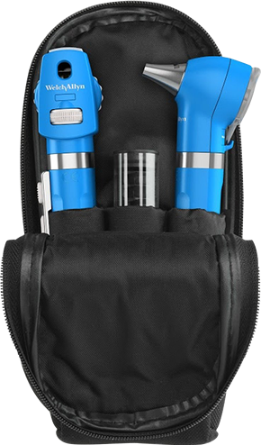

Estuche de diagnóstico 
Modelo 92871PUR

DESCRIPCIÓN:
Los sets de diagnóstico Pocket Plus LED vienen equipados con accesorios de cuatro colores. Los otoscopios Pocket Plus LED vienen equipados con accesorios del color que haya elegido y los oftalmoscopios Pocket Plus LED vienen equipados con protectores para mango del color que haya elegido.
ESPECIFICACIONES TÉCNICAS:
Bombillos LED con tecnología SureColor™ patentada por Welch Allyn.
El oftalmoscopio de Welch Allyn más liviano para mayor portabilidad y facilidad de uso.
Cuenta con las aberturas y los filtros de nuestros oftalmoscopios de tamaño tradicional para que no tenga que sacrificar ninguna funcionalidad.
Descanso de goma para la ceja, que proporciona mayor comodidad durante el examen.
Iluminación de fibra óptica, que emite luz fría, sin reflejos ni obstrucciones.
Portátil, para ayudarle a cumplir con los desafíos que enfrenta al tratar a pacientes.
DATOS COMPLEMENTARIOS: Si desea obtener más información, favor de contactar a:
ECOMED, S.A. DE C.V.
Tels.: CDMX: (55) 5698-6747, 7699-9948
Tel. Chihuahua (matriz): (614) 423-4500
Lada sin costo: 01 800-633-4225
e-mail: info@detecto.mx
www.ecomed.mx